수질환경기사 (2014-05-25 기출문제)
1과목: 수질오염개론
1. 농업용수의 수질을 분석할 때 이용되는 SAR(Sodium Adsorption Ration)과 관계없는 것은?
- Na+
- Mg2+
- Ca2+
- Fe2+
(정답률: 85%)

2. 하천의 자정단계와 오염의 정도를 파악하는 Whipple의 자정단계(지대별 구분)에 대한 설명으로 틀린 것은?
- 분해지대：유기성 부유물의 침전과 환원 및 분해에 의한 탄산가스의 방출이 일어난다.
- 분해지대：용존산소의 감소가 현저하다.
- 활발한 분해지대：수중환경은 형기성상태가 되어 첨전 저니는 흑갈색 또는 황색을 띤다.
- 활발한 분해지대：오염에 강한 실지렁이가 나타나고 혐기성 곰팡이가 증식한다.
(정답률: 81%)
3. 아세트산(CH3COOH) 120mg/l 용액의 pH는? (단, 아세트산 Ka 는 1.8×10-5)
- 4.65
- 4.21
- 3.72
- 3.52
(정답률: 68%)
4. 어느 시료의 대장균 수가 5,000/mL 이라면 대장균 수가100/mL 이 될 때까지 필요한 시간은? (단, 1차 반응 기준, 대장균의 반감기는 1시간이다.)
- 약 4.8시간
- 약 5.6시간
- 약 6.7시간
- 약 7.9시간
(정답률: 68%)
5. 0.01M-KBr과 0.02M-ZnSO4 용액의 이온강도는? (단, 완전 해리 기준)
- 0.08
- 0.09
- 0.12
- 0.14
(정답률: 65%)
6. 하천 수질모델 중 WQRRS에 관한 설명과 가장 거리가 먼 것은?
- 하천 및 호수의 부영양화를 고려한 생태계 모델이다.
- 유속, 수심, 조도계수에 의해 확산계수를 결정한다.
- 호수에는 수심별 1차원 모델이 적용된다.
- 정적 및 동적인 하천의 수질, 수문학적 특성이 광범위하게 고려된다.
(정답률: 76%)
7. 용존산소농도가 9.0mg/L인 물 100L가 있다면, 이 물의 용존산소를 완전히 제거하려 할 때 필요한 이론적 Na2SO3의 량(g)은? (단, 원자량 Na：23)
- 약 6.3g
- 약 7.1g
- 약 9.2g
- 약 11.4g
(정답률: 61%)
8. 어느 배양기(培養基)의 제한기질농도(S)가 100mg/L, 세포 최대비증식계수(μmax)가 0.35/hr일 때 Monod식에 의한 세포의 비증식계수(μ)는? (단, 제한기질 반포화농도(Ks)는 30mg/L 이다.)
- 0.27/hr
- 0.34/hr
- 0.42/hr
- 0.54/hr
(정답률: 64%)
9. 적조 발생 요인과 가장 거리가 먼 것은?
- 수괴의 연직 안정도가 작다.
- 영양염의 공급이 충분하다.
- 하천수 유입으로 해수의 염분량이 저하된다.
- 해저의 산소가 고갈된다.
(정답률: 76%)
10. 물의 특성에 관한 설명으로 옳지 않은 것은?
- 물은 2개의 수소원자가 산소원자를 사이에 두고 104.5° 의 결합각을 가진 구조로 되어 있다.
- 물은 극성을 띠지 않아 다양한 물질의 용매로 사용된다.
- 물은 유사한 분자량의 다른 화합물보다 비열이 매우 커 수온의 급격한 변화를 방지해 준다.
- 물의 밀도는 4℃에서 가장 크다.
(정답률: 86%)
11. 하수에 유입된 어떤 유해 물질을 제거하기 위해 사전에 pH3 에서 pH7 까지 올려야 한다면 다른 영향이 없고 계산대로 반응할 경우 공업용 수산화나트륨(순도 95%)을 하수 1L에 몇 g 정도 투입하여야 하는가? (단, 완전해리 기준, Na＝23)
- 0.42g
- 0.042g
- 0.0042g
- 0.00042g
(정답률: 48%)
12. 최종 BOD가 200mg/L, 탈산소계수(자연대수를 Base로 함)가 0.2day-1 인 오수의 5일 소모 BOD는?
- 약 126mg/L
- 약 136mg/L
- 약 146mg/L
- 약 156mg/L
(정답률: 64%)
13. Glycine(C2H5O2N)이 호기성 조건에서 CO2, H2O와 HNO3로 분해된다면 Glycine 30g 분해에 소요되는 산소량은?
- 약 35
- 약 45g
- 약 55g
- 약 65g
(정답률: 64%)
14. 최종 BOD가 20mg/L, DO가 5mg/L인 하천의 상류지점으로부터 3일 유하 거리의 하류지점에서의 DO 농도(mg/L)는?(단, 온도 변화는 없으며 DO 포화농도는 9mg/L이고, 탈산소계수는 0.1/day, 재폭기계수는 0.2/day, 상용대수 기준임)
- 약 4.0
- 약 4.5
- 약 3.0
- 약 2.5
(정답률: 54%)
15. 기체의 법칙 중 Graham의 법칙에 관한 설명으로 가장 적절한 것은?
- 기체가 관련된 화학반응에서는 반응하는 기체와 생성된 기체의 부피 사이에는 정수관계가 성립한다.
- 기체의 확산속도(조그마한 구멍을 통한 기체의 탈출)는 기체 분자량의 제곱근에 반비례한다.
- 일정한 온도에서 일정한 부피의 액체에 용해되면 기체의 양은 그 액체 위에 미치는 기체 압력에 비례한다.
- 공기와 같은 혼합기체 속에서 각 성분기체는 서로 독립적으로 압력을 나타낸다.
(정답률: 74%)
16. 25℃, 4atm의 압력에 있는 메탄가스 15kg 을 저장하는데 필요한 탱크의 부피는?(단, 이상기체의 법칙 적용, R＝0.082Lㆍatm/molㆍ°K(표준 상태기준))
- 4.42m3
- 5.72m3
- 6.54m3
- 7.45m3
(정답률: 65%)
17. 수질분석 결과가 다음과 같다. 이 시료의 경도 값은? (단, Ca＝40, Mg＝24, Na＝23 이다.)
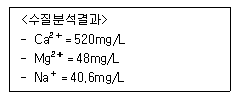
- 1,100mg/L as CaCO3
- 1,200mg/L as CaCO3
- 1,300mg/L as CaCO3
- 1,500mg/L as CaCO3
(정답률: 65%)
18. 2,000mg/L Ca(OH)2 용액의 pH는? (단, Ca(OH)2는 완전 해리되며 Ca의 원자량은 40)
- 12.13
- 12.43
- 12.73
- 12.93
(정답률: 60%)
19. 생물체 내에서 일어나는 에너지 대사에 적용되는 열역학법칙 내용과 거리가 먼 것은?
- 에너지의 총량은 일정하다.
- 자연적인 반응은 질서도가 커지는 방향으로 진행한다.
- 엔트로피는 끊임없이 증가하고 있다.
- 절대온도 0°K(－273.16℃)에서는 분자운동이 없으며 엔트로피는 0 이다.
(정답률: 78%)
20. 유량 30,000m3/day, BOD 1mg/L인 하천에 유량 1,000m3/day, BOD 220mg/L의 생활오수가 처리되지 않고 유입되고 있다. 하천수와 생활오수가 합류 직후 완전 혼합 된다고 가정할 때, 합류 후 하천의 BOD를 3mg/L로 유지하기 위해서 필요한 생활오수의 최소 BOD 제거율(%)은?
- 60.2
- 71.4
- 82.4
- 95.5
(정답률: 59%)
2과목: 상하수도계획
21. 해수담수화를 위해 해수를 취수할 때 취수위치에 따른 장단점으로 틀린 것은?
- 해중취수(10m 이상)：기상변화, 해조류의 영향이 적다.
- 해안취수(10m 이내)：계절별 수질, 수온변화가 심하다.
- 염지하수 취수：추가적 전처리 비용이 발생한다.
- 해안취수(10m 이내)：양적으로 경제적이다.
(정답률: 49%)
22. 펌프 흡입구의 유속이 4m/sec 이고 펌프의 토출량은 840m3/hr 일 때, 하수 이송에 사용되는 이 펌프의 흡입구경은?
- 223mm
- 273mm
- 326mm
- 357mm
(정답률: 66%)
23. 관거별 계획하수량을 정할 때 고려해야 할 사항 중 틀린 것은?
- 오수관거에서는 계획시간최대오수량으로 한다.
- 우수관거에서는 계획우수량으로 한다.
- 차집관거에서는 계획1일최대오수량으로 한다.
- 합류식 관거에서는 계획시간최대오수량에 계획우수량을 합한 것으로 한다.
(정답률: 62%)
24. 해수담수화시설 중 역삼투설비에 관한 설명으로 옳지 않은 것은?
- 해수담수화시설에서 생산된 물은 pH나 경도가 낮기 때문에 필요에 따라 적절한 약품을 주입하거나 다른 육지의 물과 혼합하여 수질을 조정한다.
- 막모듈은 플러싱과 약품세척 등을 조합하여 세척한다.
- 고압펌프를 정지할 때에는 드로백(Draw-Back)이 유지되도록 체크 벨브를 설치하여야 한다.
- 고압펌프는 효율과 내식성이 좋은 기종으로 하며 그 형식은 시설규모 등에 따라 선정한다.
(정답률: 64%)
25. 하수관거 배수설비의 설명 중 옳지 않은 것은?
- 배수설비는 공공하수도의 일종이다.
- 배수설비중의 물받이의 설치는 배수구역 경계지점 또는 배수구역안에 설치하는 것을 기본으로 한다.
- 결빙으로 인한 우ㆍ오수 흐름의 지장이 발생되지 않도록 하여야 한다.
- 배수관은 암거로 하며, 우수만을 배수하는 경우에는 개거도 가능하다.
(정답률: 57%)
26. 상수시설 중 배수시설을 설계하고 정비할 때에 설계상의 기본적인 사항 중 옳은 것은?
- 배수지의 용량은 시간변동조정용량, 비상시대처용량, 소화용수량 등을 고려하여 계획시간최대급수량의 24시간 분 이상을 표준으로 한다.
- 배수관을 계획할 때에 지역의 특성과 상황에 따라 직결급수의 범위를 확대하는 것 등을 고려하여 최대정수압을 결정하며, 수압의 기준점은 시설물의 최고높이로 한다.
- 배수본관은 단순한 수지상 배관으로 하지 말고 가능한 한 상호 연결된 관망형태로 구성한다.
- 배수지관의 경우 급수관을 분기하는 지점에서 배수관내의 최대정수압은 150kPa(약
(정답률: 53%)
27. 정수방법인 완속여과방식에 관한 설명으로 틀린 것은?
- 약품처리가 필요 없다.
- 완속여과의 정화는 주로 생물작용에 의한 것이다.
- 비교적 양호한 원수에 알맞은 방식이다.
- 부지면적 소요가 적다.
(정답률: 64%)
28. 최근 정수장에서 응집제로서 많이 사용되고 있는 폴리염화 알루미늄(PACl)에 대한 설명으로 옳은 것은?
- 일반적으로 황산알루미늄보다 적정주입 pH의 범위가 넓으며 알칼리도의 감소가 적다.
- 일반적으로 황산알루미늄보다 적정주입 pH의 범위가 좁으며 알칼리도의 감소가 적다.
- 일반적으로 황산알루미늄보다 적정주입 pH의 범위가 좁으며 알칼리도의 감소가 크다.
- 일반적으로 황산알루미늄보다 적정주입 pH의 범위가 넓으며 알칼리도의 감소가 크다.
(정답률: 67%)
29. 상수도관에서 발생되는 부식 중 자연부식(마이크로셀 부식)에 해당되는 것은?
- 산소농담(통기차)
- 간섭
- 박테리아부식
- 이종금속
(정답률: 63%)
30. 하수배제방식이 합류식인 경우 중계펌프장의 계획하수량으로 가장 옳은 것은?
- 우천시 계획오수량
- 계획우수량
- 계획시간최대오수량
- 계획1일최대오수량
(정답률: 60%)
31. 상수도시설인 주요 저수시설에 대한 설명으로 틀린 것은?
- 전용댐：개발수량이 작은 규모가 많다.
- 전용댐：양호한 수질을 유지하기가 어렵다.
- 하구뚝：뚝의 조작으로 하류의 유지용수를 확보한다.
- 하구뚝：염소이온 농도에 주의를 요한다.
(정답률: 53%)
32. 정수시설인 하니콤방식에 관한 설명으로 틀린 것은? (단, 회전원판방식과 비교 기준)
- 체류시간：2시간 정도
- 손실수두：거의 없음
- 폭기설비：필요 없음
- 처리수조의 깊이：5~7m
(정답률: 51%)
33. 다음은 상수도시설인 착수정에 관한 내용이다. ( )안에 내용으로 옳은 것은?
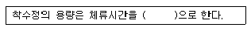
- 0.5분 이상
- 1.0분 이상
- 1.5분 이상
- 3.0분 이상
(정답률: 73%)
34. 하수관거시설인 우수토실에 관한 설명 중 잘못된 것은?
- 우수월류량은 계획하수량에서 우천시 계획오수량을 뺀 양으로 한다.
- 오수토실의 오수 유출관거에는 소정의 유량 이상이 흐르도록 하여야 한다.
- 우수토실은 위어형 이외에 수직오리피스, 기계식 수동수문 및 자동수문, 볼텍스 밸브류 등을 사용할 수 있다.
- 우수토실을 설치하는 위치는 차집관거의 배치, 방류수면 및 방류지역의 주변환경 등을 고려하여 선정한다.
(정답률: 59%)
35. 상수도 기본계획수립시 기본사항에 대한 결정 중 계획(목표)년도에 관한 내용으로 옳은 것은?
- 기본계획의 대상이 되는 기간으로 계획수립시부터 10～15년간을 표준으로 한다.
- 기본계획의 대상이 되는 기간으로 계획수립시부터 15～20년간을 표준으로 한다.
- 기본계획의 대상이 되는 기간으로 계획수립시부터 20～25년간을 표준으로 한다.
- 기본계획의 대상이 되는 기간으로 계획수립시부터 25～30년간을 표준으로 한다.
(정답률: 69%)
36. 화학적 처리를 위한 응집시설 중 급속혼화시설에 관한 설명이다. ( )안에 옳은 내용은?
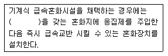
- 30초 이내의 체류시간
- 1분 이내의 체류시간
- 3분 이내의 체류시간
- 5분 이내의 체류시간
(정답률: 48%)
37. 관경 1,100mm, 역사이펀 관거내의 유속에 대한 동수경사 2.4‰, 유속 2.15m/sec, 역사이펀 관거의 길이 L＝76m일 때, 역사이펀의 손실수두는? (단, β=1.5, α=0.⑤m이다.)
- 0.29m
- 0.39m
- 0.49m
- 0.59m
(정답률: 47%)
38. 다음은 하수관거의 접합방법을 정할 때의 고려사항이다. ( )안에 가장 적합한 것은?
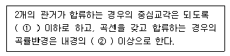
- ① 60°, ② 5배
- ① 60°, ② 3배
- ① 45°, ② 5배
- ① 45°, ② 3
(정답률: 63%)
39. 하수관거시설이 황화수소에 의하여 부식되는 것을 방지하기 위한 대책으로 틀린 것은?
- 관거를 청소하고 미생물의 생식 장소를 제거한다.
- 염화 제2철을 주입하여 황화물을 고정화한다.
- 염소를 주입하여 ORP를 저하시킨다.
- 환기에 의해 관내 황화수소를 희석한다.
(정답률: 60%)
40. 상수시설인 배수시설중 배수지의 유효수심범위(표준)로 적절한 것은?
- 6~8m
- 3~6m
- 2~3m
- 1~2m
(정답률: 73%)
3과목: 수질오염방지기술
41. 역삼투 장치로 하루에 1,710m3의 3차 처리된 유출수를 탈염시키고자 한다. 요구되는 막면적(m2)은? (단, - 유입수와 유출수 사이의 압력차＝2,400kPa, - 25℃에서 물질전달계수＝0.2068L/(day-m2)(kPa), - 최저 운전 온도＝10℃, -A10℃=1.58A25℃, - 유입수와 유출수의 삼투압 차＝310kPa)
- 약 5,351
- 약 6,251
- 약 7,351
- 약 8,121
(정답률: 59%)
42. 생물막법 처리방식인 접촉산화법의 장단점으로 옳지 않은 것은?
- 부하, 수량변동에 대하여 완충능력이 있다.
- 미생물량과 영향인자를 정상상태로 유지하기 위한 조작이 어렵다.
- 분해속도가 낮은 기질제거에 효과적이며 수온의 변동에 강하다.
- 반응조내 매체를 균일하게 포기 교반하는 조건설정이 용이하다.
(정답률: 34%)
43. 생물학적 질소제거공정에서 질산화로 생성된 NO3--N 40mg/L가 탈질되어 질소로 환원될 때 필요한 이론적인 메탄올(CH3OH)의 양(mg/L)는?
- 17.2mg/L
- 36.6mg/L
- 58.4mg/L
- 76.2mg/L
(정답률: 35%)
44. 농축슬러지를 혐기성소화를 통해 안정화시키고 있다. 조건이 다음과 같을 때 메탄 생성량(kg/day)은?
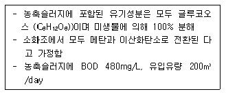
- 18
- 24
- 32
- 41
(정답률: 44%)
45. CSTR 반응조를 일차반응조건으로 설계하고, A의 제거 또는 전환율이 90%가 되게 하고자 한다. 만일, 반응상수, k가 0.35/hr이면 이 CSTR 반응조의 체류시간은?
- 12.5hr
- 25.7hr
- 32.5hr
- 43.7hr
(정답률: 45%)
46. 폭기조 내의 혼합액의 SVI가 100이고, MLSS 농도를 2,200mg/L로 유지하려면 적정한 슬러지의 반송률은? (단, 유입수의 SS는 무시한다.)
- 23.6%
- 28.2%
- 33.6%
- 38.3%
(정답률: 52%)
47. 폐수량 500m3/일, BOD 300mg/L인 폐수를 표준 활성슬러지공법으로 처리하여 최종방류수 BOD 농도를 20mg/L 이하로 유지하고자 한다. 최초침전지 BOD 제거효율이 30%일 때 포기조와 최종침전지, 즉 2차 처리 공정에서 유지되어야 하는 최저 BOD 제거효율은?
- 약 82.5%
- 약 85.5%
- 약 90.5%
- 약 94.5%
(정답률: 45%)
48. 슬러지의 소화율(消化率)이란 생슬러지 중의 VS가 가스화 및 액화되는 비율을 말한다. 생슬러지와 소화슬러지의 VS/TS가 각각 80% 및 50%일 경우 소화율은?
- 38%
- 46%
- 63%
- 75%
(정답률: 37%)
49. 하수 소독시 적용되는 오존소독방법에 관한 일반적 장단점으로 옳지 않은 것은? (단, 염소소독 방법 등과 비교)
- Cl2 보다 더 강력한 산화제이다.
- 저장시스템 파괴 사고의 위험이 있다.
- 모든 박테리아와 바이러스를 살균시킨다.
- 초기 투자비와 부속설비가 비싸다.
(정답률: 54%)
50. 하루 유량 5,000m3인 폐수를 용량이 1,500m3인 활성슬러지 폭기조로 처리한다. 이때 Kd=0.03/일 Y＝0.6 MLSSmg/BODmg, MLSS는 6,000mg/L로 유지되고 있고 유입 BOD 500mg/L는 활성슬러지 폭기조에서 BOD 90% 제거된다면 SRT는? (단, 활성슬러지 공법의 폭기조만 고려함)
- 11.1일
- 10.2일
- 8.3일
- 7.4일
(정답률: 43%)
51. 생물학적 원리를 이용하여 질소, 인을 제거하는 공정인 5단계 Bardenpho 공법에 관한 설명으로 옳지 않은 것은?
- 인제거를 위해 혐기성조가 추가된다.
- 조 구성은 혐기조, 무산소조, 호기조 무산소조, 호기조 순이다.
- 내부반송률은 유입유량 기준으로 100～200% 정도이며 2단계 무산소조로부터 1단계 무산소조로 반송된다.
- 마지막 호기성 단계는 폐수내 잔류 질소가스를 제거하고 최종 침전지에서 인의 용출을 최소화하기 위하여 사용한다.
(정답률: 55%)
52. 막공법에 관한 내용으로 옳지 않은 것은?
- 투석은 선택적 투과막을 통해 용액 중에 다른 이온, 혹은 분자의 크기가 다른 용질을 분리시키는 것이다.
- 투석에 대한 추진력은 막을 기준으로 한 용질의 농도차이다.
- 한외여과 및 미여과의 분리는 주로 여과작용에 의한 것으로 역삼투현상에 의한 것이 아니다.
- 역삼투는 한외여과 및 미여과와 상이하게 반투막으로 용매를 통과시키기 위해 정수압을 이용한다.
(정답률: 41%)
53. 물리, 화학적으로 질소제거 공정인 파괴점 염소주입에 관한 내용으로 옳지 않은 것은?(단, 기타 방법과 비교 내용임)
- 수생생물에 독성을 끼치는 잔류 염소농도가 높아진다.
- pH에 영향이 없어 염소투여요구량이 일정하다.
- 기존 시설에 적용이 용이하다.
- 고도의 질소제거를 위하여 여타 질소제거 공정 다음에 사용 가능하다.
(정답률: 57%)
54. 혐기성 소화법과 비교한 호기성 소화법의 장단점으로 옳지 않은 것은?
- 운전이 용이하다.
- 소화슬러지 탈수가 용이하다.
- 가치 있는 부산물이 생성되지 않는다.
- 저온시의 효율이 저하된다.
(정답률: 52%)
55. 폐수 유량이 3,000m3/d, 부유 고형물의 농도가 150mg/L이다. 공기부상 시험에서 공기와 고형물의 비가 0.⑤mg-air/mg-solid 일 때 최적의 부상을 나타낸다. 설계온도 20℃. 이때의 공기용해도는 18.7mL/L이다. 흡수비 0.5, 부하율이 0.12m3/m2ㆍmin일 때 반송이 있으며 운전압력이 3.5 기압인 부상조 표면적은?
- 18.5m
- 24.5m2
- 32.5m2
- 41.5m2
(정답률: 36%)
56. 1,000m3의 하수로부터 최초침전지에서 생성되는 슬러지 양은?
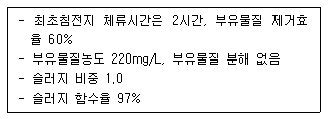
- 2.4m3/1,000m3
- 3.2m3/1,000m3
- 4.4m3/1,000m3
- 5.2m3/1000m3
(정답률: 50%)
57. 암모니아성 질소가 25mg/L인 폐수의 완전 질산화에 필요한 이론적 산소요구량(mg/L)은?
- 약 115
- 약 125
- 약 135
- 약 145
(정답률: 31%)
58. 어느 특정한 산화지 내에 1일 BOD 부하를 30kg/dayㆍm2으로 설계하였다. 평균 유량이 2.5m3/min이고 BOD 농도가 270mg/L일 때 필요한 면적(m2)은? (단, 기타 조건은 고려하지 않음)
- 30.5m2
- 32.4m2
- 36.2m2
- 40.8m2
(정답률: 46%)
59. 생물학적 질소, 인제거를 위한 A2/0 공정 중 호기조의 역할로 옳게 짝지은 것은?
- 질산화, 인방출
- 질산화, 인흡수
- 탈질화, 인방출
- 탈질화, 인흡수
(정답률: 56%)
60. 슬러지를 진공 탈수시켜 부피가 50% 감소되었다. 유입슬러지 함수율이 98% 이었다면 탈수 후 슬러지의 함수율은? (단, 슬러지 비중은 1.0 기준)
- 90%
- 92%
- 94%
- 96%
(정답률: 49%)
4과목: 수질오염공정시험기준
61. 공장, 하수 및 폐수 종말처리장 등의 원수, 공정수, 배출수 등의 개수로 유량을 측정하는데 사용하는 웨어의 정확도 기준은? (단, 실제유량에 대한 %)
- ±5%
- ±10%
- ±15%
- ±25%
(정답률: 44%)
62. 시험과 관련된 총칙에 관한 설명으로 옳지 않은 것은?
- “방울수”라 함은 0℃에서 정제수 20방울을 적하할 때 그 부피가 약 1mL 되는 것을 뜻한다.
- “찬 곳”은 따로 규정이 없는 한 0~15℃의 곳을 뜻한다.
- “감압 또는 진공” 이라 함은 따로 규정이 없는 한 15mmHg 이하를 말한다.
- “약” 이라 함은 기재된 양에 대하여 ±10% 이상의 차가 있어서는 안 된다.
(정답률: 61%)
63. 하천유량 측정을 위한 유속 면적법의 적용범위로 틀린 것은?
- 대규모 하천을 제외하고 가능하면 도섭으로 측정할 수 있는 지점
- 교량 등 구조물 근처에서 측정할 경우 교량의 상류지점
- 합류나 분류되는 지점
- 선정된 유량측정 지점에서 말뚝을 박아 동일 단면에서 유량측정을 수행할 수 있는 지점
(정답률: 56%)
64. 다음은 퇴적물 완전연소가능량 측정에 관한 내용이다. ( )안에 옳은 내용은?
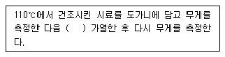
- 550℃에서 1시간
- 550℃에서 2시간
- 550℃에서 3시간
- 550℃에서 4시간
(정답률: 56%)
65. 웨어의 수두가 0.25m, 수로의 폭이 0.8m, 수로의 밑면에서 절단 하부점까지의 높이가 0.7m인 직각 3각웨어의 유량은 ?(단, 유량계수
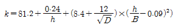
)- 1.4m3/min
- 2.1m3/min
- 2.6m3/min
- 2.9m3/min
(정답률: 49%)
66. 시료의 최대 보존기간이 다른 측정항목은?
- 페놀류
- 인산염인
- 화학적산소요구량
- 황산이온
(정답률: 45%)
67. 다음은 니켈의 자외선/가시선 분광법 측정에 관한 내용이다. ( )안에 내용으로 옳은 것은?
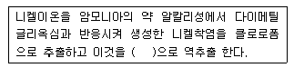
- 벤젠
- 노말헥산
- 묽은 염산
- 사염화탄소
(정답률: 29%)
68. 효소이용정량법을 활용한 대장균 분석시 사용되는 검출기는?
- 자외선 검출기
- 적외선 검출기
- 마이크로파 검출기
- 초음파 검출기
(정답률: 47%)
69. 다음의 측정항목 중 시료 보존 방법이 다른 것은?
- 물벼룩 급성독성
- 생물화학적 산소요구량
- 전기전도도
- 황산이온
(정답률: 27%)
70. 암모니아성 질소의 분석방법과 가장 거리가 먼 것은? (단, 수질오염공정시험기준 기준)
- 자외선/가시선 분광법
- 연속흐름법
- 이온전극법
- 적정법
(정답률: 51%)
71. 다음은 자외선/가시선 분광법을 적용한 크롬 측정에 관한 내용이다. ( )안에 옳은 내용은?
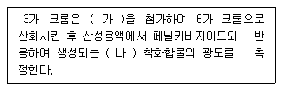
- 가：과망간산칼륨, 나：황색
- 가：과망간산칼륨, 나：적자색
- 가：티오황산나트륨, 나：적색
- 가：티오황산나트륨, 나：황갈색
(정답률: 48%)
72. 다음은 수질연속자동측정기의 설치방법 중 시료채취 지점에 관한 내용이다. ( )안에 옳은 내용은?
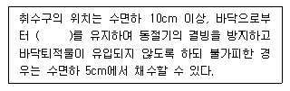
- 10cm
- 15cm
- 20cm
- 30cm
(정답률: 54%)
73. 0.025N-KMnO4 400mL를 조제하려면 KMnO4 약 몇 g을 취해야 하는가?(단, 원자량：K＝39, Mn＝55)
- 약 0.32
- 약 0.63
- 약 0.84
- 약 0.98
(정답률: 42%)
74. 총 유기탄소 측정시 적용되는 용어 정의로 옳지 않은 것은?
- 비정화성 유기탄소：총 탄소 중 pH 5.6 이하에서 포기에 의해 정화 되지 않는 탄소를 말한다.
- 부유성 유기탄소：총 유기탄소 중 공극 0.45μm의 막여지를 통과하지 못한 유기탄소를 말한다.
- 무기성 탄소：수중에 탄산염, 중탄산염, 용존 이산화탄소 등 무기적으로 결합된 탄소의 합을 말한다.
- 총 탄소：수중에서 존재하는 유기적 또는 무기적으로 결합된 탄소의 합을 말한다.
(정답률: 42%)
75. 노말헥산 추출물질의 정량한계는?
- 0.1mg/L
- 0.5mg/L
- 1.0mg/L
- 5.0mg/L
(정답률: 48%)
76. 기체크로마토그래피에 의해 유기인 측정에 관한 내용 중 간섭물질에 대한 설명으로 틀린 것은?
- 폴리테트라플루오로에틸렌(PTFE) 재질이 아닌 튜브, 봉합제 및 유속조절제의 사용을 피해야 한다.
- 검출기는 불꽃광도 검출기(FPD) 또는 질소인검출기(NPD)를 사용한다.
- 높은 농도를 갖는 시료와 낮은 농도를 갖는 시료를 연속하여 분석할 때에 오염이 될 수 있으므로 높은 농도의 시료를 분석한 후에는 바탕시료를 분석하는 것이 좋다.
- 플로리실 컬럼 정제는 산, 염화페놀, 폴리클로로페녹시페놀 등의 극성화합물을 제거하기 위해 수행한다.
(정답률: 24%)
77. 유기물 함량이 비교적 높지 않고 금속의 수산화물, 산화물, 인산염 및 황화물을 함유하는 시료의 전처리(산분해법)방법으로 가장 적합한 것은?
- 질산법
- 황산법
- 질산-황산법
- 질산-염산법
(정답률: 57%)
78. 물 속에 존재하는 비소의 측정방법으로 거리가 먼 것은? (단, 수질오염공정시험기준 기준)
- 수소화물생성-원자흡수분광광도법
- 자외선/가시선 분광법
- 양극벗김전압전류법
- 이온크로마토그래피법
(정답률: 45%)
79. 분원성대장균군(막여과법) 분석 시험에 관한 내용으로 틀린 것은?(오류 신고가 접수된 문제입니다. 반드시 정답과 해설을 확인하시기 바랍니다.)
- 분원성대장균군이란 온혈동물의 배설물에서 발견되는 그람음성ㆍ무아포성의 간균이다.
- 물속에 존재하는 분원성대장균군을 측정하기 위하여 페트리접시에 배지를 올려놓은 다음 배양 후 여러 가지 색조를 띠는 청색의 집락을 계수하는 방법이다.
- 배양기 또는 항온수조는 배양온도를 (25±0.5)℃로 유지할 수 있는 것을 사용한다.
- 실험결과는 “분원성대장균군수/100mL” 로 표기한다.
(정답률: 60%)
80. 고형물질이 많아 관을 메울 우려가 있는 폐ㆍ하수의 관내 유량을 측정하는 방법으로 가장 옳은 것은?
- 자기식 유량측정기(Magnetic Flow Meter)
- 유량측정용 노즐(Nozzle)
- 파샬풀름(Parshall Flume)
- 피토우관(Pitot)
(정답률: 57%)
5과목: 수질환경관계법규
81. 공공수역의 수질보전을 위하여 고랭이 경작지에 대한 경작방법을 권고할 수 있는 기준(환경부령으로 정함)이 되는 해발고도와 경사도가 바르게 연결된 것은?
- 300m 이상, 10% 이상
- 300m 이상, 15% 이상
- 400m 이상, 10% 이상
- 400m 이상, 15% 이상
(정답률: 55%)
82. 다음은 기타 수질오염원의 설치ㆍ관리자가 하여야 할 조치에 관한 내용이다. ( )안에 옳은 내용은?
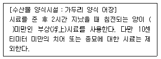
- 10%
- 20%
- 30%
- 40%
(정답률: 38%)
83. 일일기준초과 배출량 및 일일유량 산정 방법에 관한 내용으로 옳지 않은 것은?
- 배출농도의 단위는 리터당 밀리그램(mg/L)으로 한다.
- 특정수질유해물질의 배출허용기준 초과 일일오염물질배출량은 소수점 이하 넷째 자리까지 계산한다.
- 일일유량 산정을 위한 측정유량의 단위는 m3/min으로 한다.
- 일일유량 산정을 위한 일일조업시간은 측정하기 전 최근 조업한 30일간의 배출시설 조업시간의 평균치로서 분(min)으로 표시한다.
(정답률: 50%)
84. 수질 및 수생태계 환경기준 중 하천에서의 사람의 건강보호 기준으로 옳은 것은?
- 6가크롬 - 0.5mg/L 이하
- 비소 - 0.⑤mg/L 이하
- 음이온계면활성제 - 0.1mg/L 이하
- 테트라클로로에틸렌 - 0.02mg/L 이하
(정답률: 44%)
85. 공공수역의 수질 및 수생태계 보전을 위하여 특정농작물의 경작 권고를 할 수 있는 자는?
- 대통령
- 유역 ㆍ 지방환경청장
- 환경부장관
- 시ㆍ도지사
(정답률: 39%)
86. 다음은 폐수종말처리시설의 유지ㆍ관리기준 중 처리시설의 관리ㆍ운영자가 실시하여야 하는 방류수 수질검사에 관한 내용이다. ( )안에 옳은 내용은? (단, 방류수 수질은 현저하게 악화되지 않음)
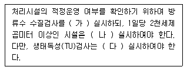
- 가：월 1회 이상, 나：주 1회 이상, 다：월 2회 이상
- 나：월 1회 이상, 나：주 2회 이상, 다：월 1회 이상
- 다：월 2회 이상, 나：주 1회 이상, 다：월 1회 이상
- 라：월 2회 이상, 나：주 1회 이상, 다：월 2회 이상
(정답률: 49%)
87. 다음 중 초과부과금 산정기준으로 적용되는 수질오염물질 1킬로그램당 부과 금액이 가장 높은(많은) 것은?
- 카드뮴 및 그 화합물
- 6가크롬 화합물
- 납 및 그 화합물
- 수은 및 그 화합물
(정답률: 48%)
88. 중점관리저수지(농업용의 경우)의 해제 조건에 대한 설명으로 옳은 것은?
- 호소의 생활환경기준 중 약간 나쁨(IV)등급 기준 이하로 1년 이상 계속 유지하는 경우
- 호소의 생활환경기준 중 약간 나쁨(IV)등급 기준 이하로 2년 이상 계속 유지하는 경우
- 호소의 생활환경기준 중 보통(III)등급 기준 이하로 1년 이상 계속 유지하는 경우
- 호소의 생활환경기준 중 보통(III)등급 기준 이하로 2년 이상 계속 유지하는 경우
(정답률: 33%)
89. 다음 중 수질자동측정기기 및 부대시설을 모두 부착하지 아니할 수 있는 시설의 기준으로 옳은 것은?
- 연간 조업일수가 60일 미만인 사업장
- 연간 조업일수가 90일 미만인 사업장
- 연간 조업일수가 120일 미만인 사업장
- 연간 조업일수가 150일 미만인 사업장
(정답률: 50%)
90. 환경부 장관은 비점오염원관리지역을 지정, 고시한 때에는 비점오염원관리대책을 수립하여야 한다. 다음 중 관리대책에 포함되어야 할 사항과 가장 거리가 먼 것은?
- 관리대상 지역의 개발현황 및 계획
- 관리대상 수질오염물질의 종류 및 발생량
- 관리대상 수질오염물질의 발생 예방 및 저감방안
- 관리목표
(정답률: 33%)
91. 총량관리 단위 유역의 수질 측정방법 중 측정수질에 관한 내용으로 옳은 것은?
- 산정 시점으로부터 과거 1년간 측정한 것으로 하며, 그 단위는 리터당 밀리그램(mg/L)으로 표시한다.
- 산정 시점으로부터 과거 2년간 측정한 것으로 하며, 그 단위는 리터당 밀리그램(mg/L)으로 표시한다.
- 산정 시점으로부터 과거 3년간 측정한 것으로 하며, 그 단위는 리터당 밀리그램(mg/L)으로 표시한다.
- 산정 시점으로부터 과거 5년간 측정한 것으로 하며, 그 단위는 리터당 밀리그램(mg/L)으로 표시한다.
(정답률: 42%)
92. 폐수배출시설에 대한 배출부과금을 부과하는 경우, 배출부과금 부과기간의 시작일 전 6개월 이상 방류수 수질기준을 초과하는 수질오염물질을 배출하지 아니한 사업자에 대한 감면율을 적용하여 기본배출부과금을 감경할 수 있다. 1년 이상 2년 내에 방류수 수질 기준을 초과하여 오염물질을 배출하지 아니한 경우에 적용되는 감면율로 옳은 것은?
- 100분의 30
- 100분의 40
- 100분의 50
- 100분의 60
(정답률: 41%)
93. 대권역별 수질 및 수생태계 보전을 위한 기본계획에 포함되어야 할 사항과 가장 거리가 먼 것은?
- 상수원 및 물 이용현황
- 점오염원, 비점오염원 및 기타 수질오염원의 분포현황
- 점오염원, 비점오염원 및 기타 수질오염원의 수질오염 저감시설 현황
- 점오염원, 비점오염원 및 기타 수질오염원에서 배출되는 수질오염물질의 양
(정답률: 43%)
94. 다음은 중점관리저수지의 관리자와 그 저수지의 소재지를 관할하는 시도지사가 수립하는 중점관리저수지의 수질오염방지 및 수질개선에 관한 대책에 포함되어야 하는 사항이다. ( )안의 내용으로 옳은 것은?
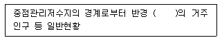
- 500m 이내
- 1km 이내
- 2km 이내
- 5km 이내
(정답률: 51%)
95. 비점오염저감시설을 자연형과 장치형 시설로 구분할 때 다음 중 장치형 시설에 해당하지 않는 것은?
- 생물학적 처리형 시설
- 여과형 시설
- 와류형 시설
- 저류형 시설
(정답률: 49%)
96. 수질 및 수생태계 보전에 관한 법률에 사용하는 용어의 뜻으로 틀린 것은?
- “점오염원”이라 함은 폐수배출시설, 하수발생시설, 축사 등으로서 관거ㆍ수로 등을 통하여 일정한 지점으로 수질오염물질을 배출하는 배출원을 말한다.
- “공공수역”이라 함은 하천, 호소, 항만, 연안해역 그밖에 공공용으로 사용되는 환경부령이 정하는 수역을 말한다.
- “폐수”라 함은 물에 액체성 또는 고체성 수질오염 물질이 섞여 있어 그대로는 사용할 수 없는 물을 말한다.
- “폐수무방류배출시설”이라 함은 폐수배출시설에서 발생하는 폐수를 해당 사업장에서 수질오염방지시설을 이용하여 처리하거나 동일 배출시설에 재이용하는 등 공공수역으로 배출하지 아니하는 폐수배출시설을 말한다.
(정답률: 35%)
97. 시도지사가 오염총량관리기본계획의 승인을 받으려는 경우 오염총량관리기본계획에 첨부하여 환경부장관에게 제출하여야 하는 서류와 가장 거리가 먼 것은?
- 유역환경의 조사ㆍ분석 자료
- 오염부하량의 저감계획을 수립하는 데에 사용한 자료
- 오염총량목표수질을 수립하는 데에 사용한 자료
- 오염부하량의 산정에 사용한 자료
(정답률: 38%)
98. 비점오염원 관리지역의 지정 기준이 옳은 것은?
- 하천 및 호소의 수생태계에 관한 환경기준에 미달하는 유역으로 유달부하량 중 비점오염 기여율이 50% 이하인 지역
- 관광지구 지점으로 비점오염원 관리가 필요한 지역
- 인구 50만 이상인 도시로서 비점오염원 관리가 필요한 지역
- 지질이나 지층구조가 특이하여 특별한 관리가 필요하다고 인정되는 지역
(정답률: 42%)
99. 환경부장관이 수질 등의 측정자료를 관리ㆍ분석하기 위하여 측정기기 부착사업자 등이 부착한 측정기기와 연결, 그 측정결과를 전산 처리할 수 있는 전산망 운영을 위한 수질원격감시체계 관제센터를 설치ㆍ운영할 수 있는 곳은?
- 국립환경과학원
- 유역환경청
- 한국환경공단
- 시 ㆍ 도 보건환경연구원
(정답률: 50%)
100. 위임업무 보고사항 중 보고 횟수가 다른 업무내용은?
- 폐수처리업에 대한 등록, 지도단속실적 및 처리실적 현황
- 폐수위탁, 사업장 내 처리현황 및 처리실적
- 기타 수질오염원 현황
- 과징금 부과실적
(정답률: 39%)
SAR은 농업용수의 염분농도를 평가하는 지표 중 하나로, 물 속에 녹아있는 나트륨(Na+), 마그네슘(Mg2+), 칼슘(Ca2+)의 비율을 나타내는 지표입니다. 이 비율이 높을수록 물의 염분농도가 높아지며, 이는 농작물의 성장에 영향을 미칠 수 있습니다.
하지만 Fe2+는 SAR과는 관계가 없습니다. Fe2+는 물 속에 존재하는 철의 이온 형태로, 농작물의 성장에 직접적인 영향을 미치지 않습니다. 따라서 이 보기에서는 SAR과 관련된 요소들을 고르는 것이 문제의 의도입니다.